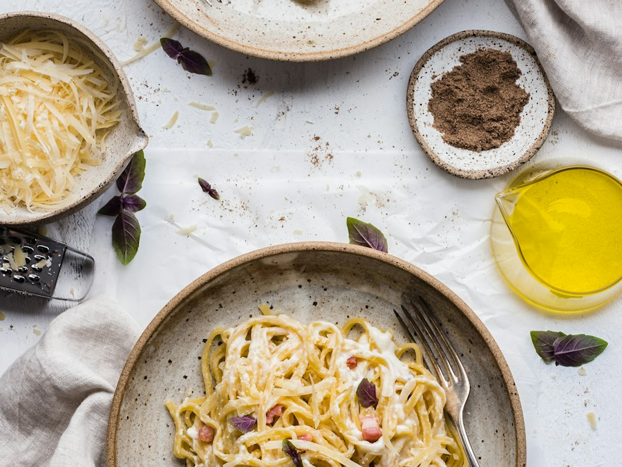
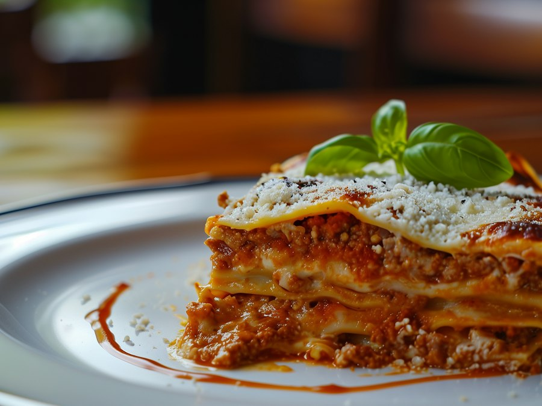
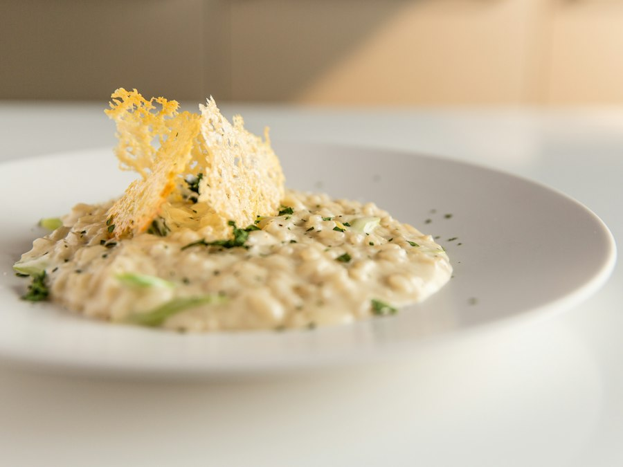
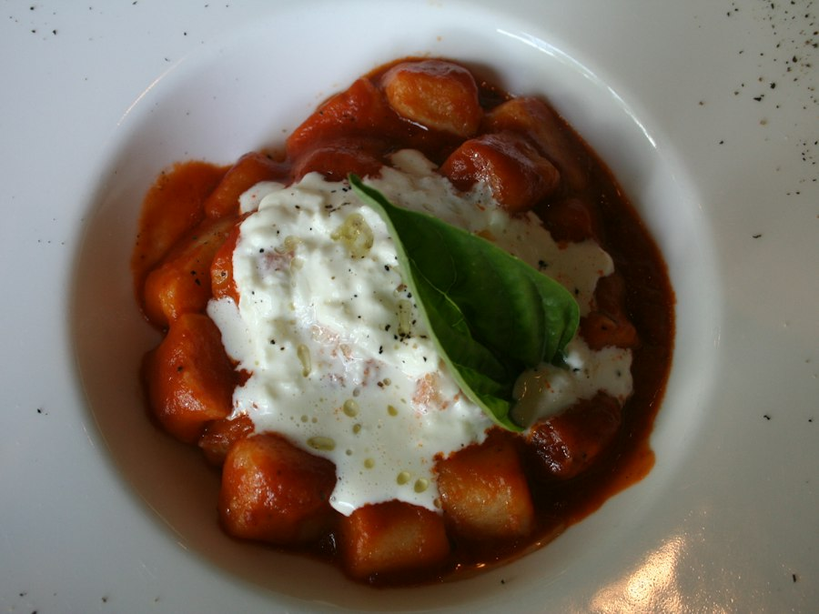
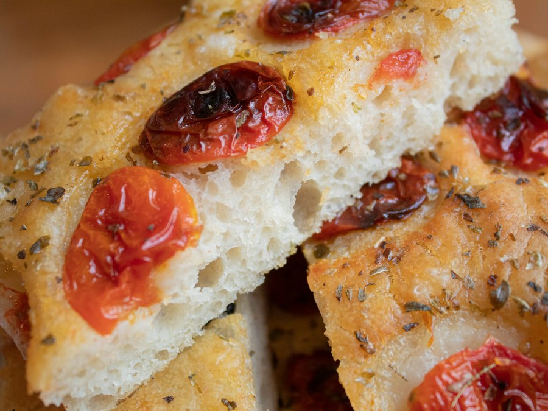
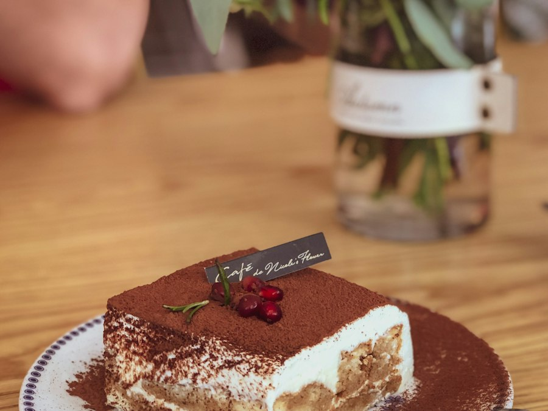

Inicio / Recetas
Recetas
Todas las recetas publicadas en la newsletter, con tiempo, dificultad y raciones.
6 recetas
-

PastaSpaghetti alla carbonara
Huevo, guanciale, pecorino y pimienta. Sin nata.
- Tiempo: 25 min
- Dificultad: Fácil
- 4 personas
-

PastaLasaña a la boloñesa
Ragú cocinado a fuego lento y bechamel casera.
- Tiempo: 2 h 30 min
- Dificultad: Media
- 6 personas
-

ArrocesRisotto alla milanese
Arroz carnaroli, azafrán y caldo de carne.
- Tiempo: 35 min
- Dificultad: Media
- 4 personas
-

PastaÑoquis de patata
Patata asada, harina y un huevo. Masa ligera.
- Tiempo: 1 h
- Dificultad: Media
- 4 personas
-

PanesFocaccia genovesa
Masa hidratada, aceite de oliva y sal gruesa.
- Tiempo: 3 h 30 min
- Dificultad: Fácil
- 6 personas
-

PostresTiramisú
Mascarpone, café y bizcochos de soletilla.
- Tiempo: 30 min + 6 h de frío
- Dificultad: Fácil
- 8 personas
Recibe una receta nueva cada domingo
Una receta, una técnica y un producto de temporada en tu correo.